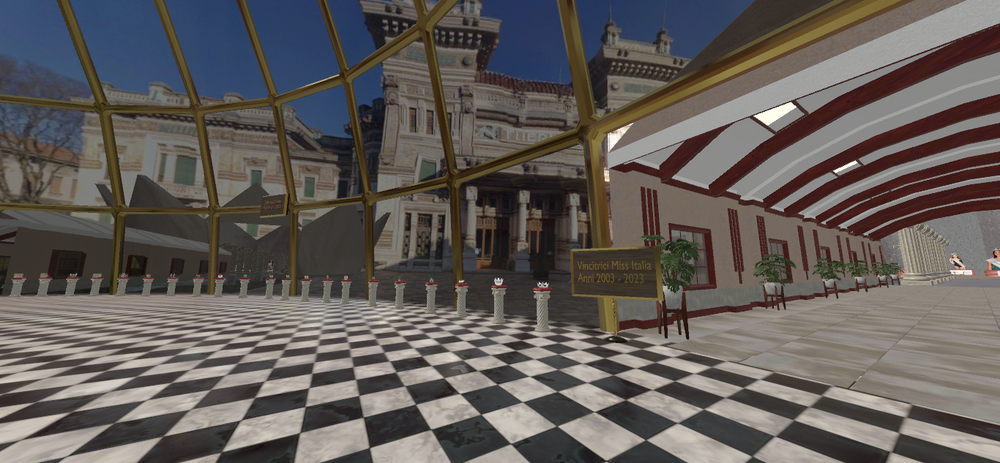
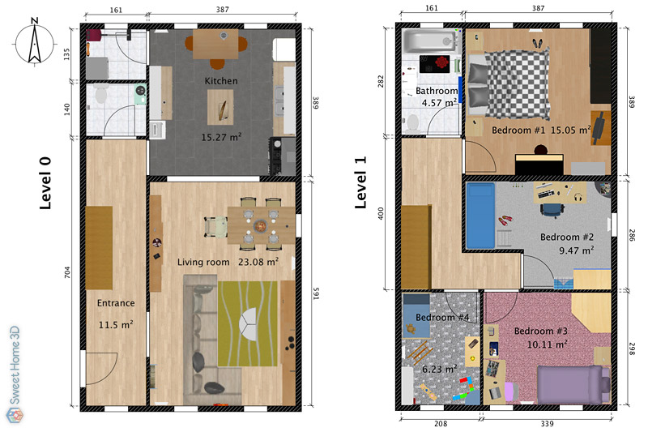
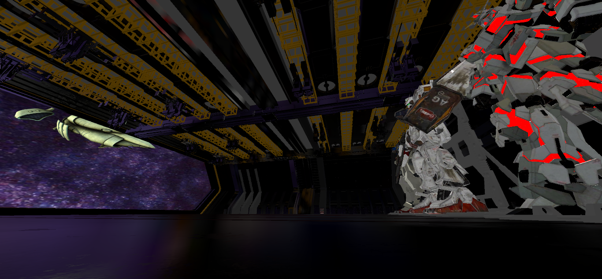

Specializzazione nella creazione di asset e ambienti 3D ottimizzati per esperienze immersive e virtuali. Dalla concept art alla realizzazione di stanze virtuali e oggetti interattivi con Blender per Metaverso.
Servizi di design e modellazione 3D focalizzati sull'immersività
Modellazione di oggetti di scena, arredamento e elementi scenici ottimizzati per la bassa latenza.
Creazione e allestimento completo di spazi e stanze virtuali metaversali usufruibili tramite visore, computer e smartphone.
Conversione di modelli 3D esistenti e ottimizzazione della geometria per garantire performance fluide su visori VR e piattaforme di metaverso.
Modellazione di personaggi e avatar compatibili con sistemi di AI per conversazioni e interazioni realistiche all'interno degli spazi virtuali.
Definizione delle specifiche (es. poly count target, dimensioni delle texture) e sviluppo del concept visivo.
Modellazione High/Low Poly, Retopology mirata e ottimizzazione della geometria direttamente in Blender per garantire performance fluide.
Creazione di UV mapping efficiente, generazione di texture PBR e ottimizzazione dei materiali per un rendering realistico.
Illuminazione della scena e rendering finale con motori di Blender (Cycles/Eevee). Export nel formato richiesto (GLB/GLTF, FBX e OBJ).
Esempi di ambienti virtuali e asset immersivi realizzati

Gli organizzatori di Miss Italia volevano avere uno showroom persistente virtuale pubblico per accompagnare i visitatori nella storia dell'evento .
Progettazione e modellazione della stanza virtuale in Blender, ottimizzazione degli asset a basso poly-count e integrazione con i prop.
Stanza virtuale completamente navigabile, esperienza immersiva fluida e utilizzo da parte di decine di utenti contemporaneamente, riducendo i costi di un evento fisico.

Era necessario istruire un nuovo studente all'utilizzo del programma simil-CAD, open source SweetHome3D.
Modellazione guidata attraverso sessioni su Team Viewer, fino al completamento del progetto, in questo caso, un museo della musica.
Stanza di metaverso completata, integrazione nella piattaforma (Spatial) e visitabile dagli utenti.

Era stato richiesto dall'organizzazione un ambiente VR per l'esposizione del celebre anime anni '80 "Gundam".
Design di un ambiente composto da un hangar, modelli a grandezza naturale dei robot e skybox tematica.
Riscosso alto indice di gradimento e richieste collaborazioni ulteriori.
Toolset professionale focalizzato su Blender per l'ecosistema Web3
Fornisco i modelli principalmente nei formati standard per 3D: GLB/GLTF, FBX e OBJ. Posso anche fornire il file BLEND nativo su richiesta.
Dipende dalla complessità e dalle dimensioni. Un singolo asset ottimizzato può richiedere 1-2 giorni, mentre la progettazione e modellazione completa di una stanza virtuale complessa richiede in media 2-4 settimane, incluso testing e ottimizzazione.
Assolutamente! La mia esperienza è focalizzata sulla creazione di asset per garantire performance elevate e un frame rate stabile sui visori come Meta Quest 2 e 3.
Il mio tool primario è Blender. Lo utilizzo per tutte le fasi del workflow: modellazione, ottimizzazione della geometria, texturing e rendering.